你是如此热爱学习
1.如何生存
生存依赖:生命与非生命的本质区别
1.存在方式对比
1.1 非生命
无法控制自身状态,自身状态的存活决定于周边环境施加的影响:非生命无法掌握自身的处境
1.2 生命
生命的本能让你尽可能的维持自身的存活状态,你必须通过学习,来提高你生存的可能性:主动变化避开危险,在环境中维持自身的状态
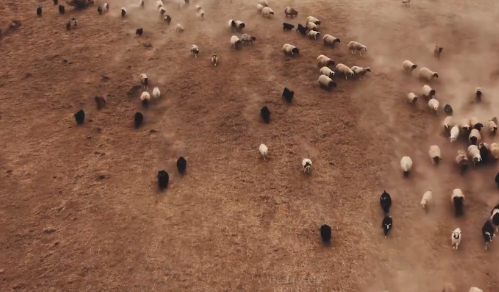
2.预测
2.1 预测支撑生命 生命时刻预测,每一个行为都是在预测
2.2 预测并非天生
小孩就无法预测到一些危险的发生
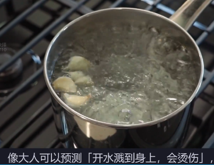
2.3 预测从何而来,如何提升?
经验预测:过去指导未来
记录下来过去所有的经验,下次看到就复现,例如:玩游戏的时候按Q可以翻滚,你就明白了,只要我按Q就会翻滚,这就是用过去的经验来指导未来面临一样的情况.
模型预测:模型预测未见
同样还是前面那个翻滚,这次你已经是一个丰富的BOSS杀手了,那么下一次碰到陌生的没见过的BOSS,你根据以前习得的知识,推测出我翻滚可以卡无敌帧躲避伤害,这就是用过去的经验总结出来的翻滚有无敌帧可以规避伤害来泛化当前面临的BOSS战情况.
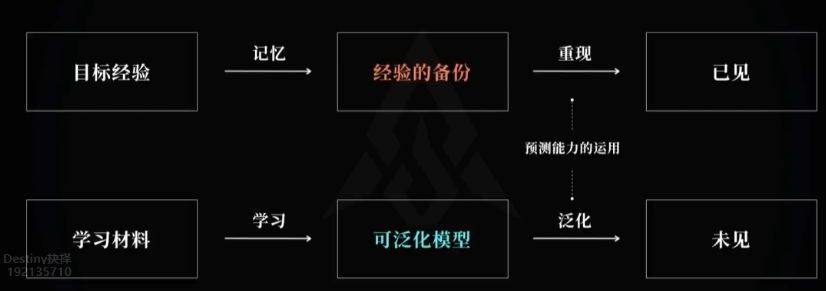
2.被利用的本能
为了更好的生存,你进化出了很多趋利避害的本能
1.视觉方面为什么视锥细胞(感知敏感)会远多于视杆(感知色彩)?
为了在黑暗中能更加敏锐的发现危险,维持自身的状态.
为什么对于色彩的剧烈变化感受非常敏锐?
因为黑夜中捕食者的眼睛发出的红光对于人来说是非常危险的信号,不敏锐的都被自然选择淘汰了.
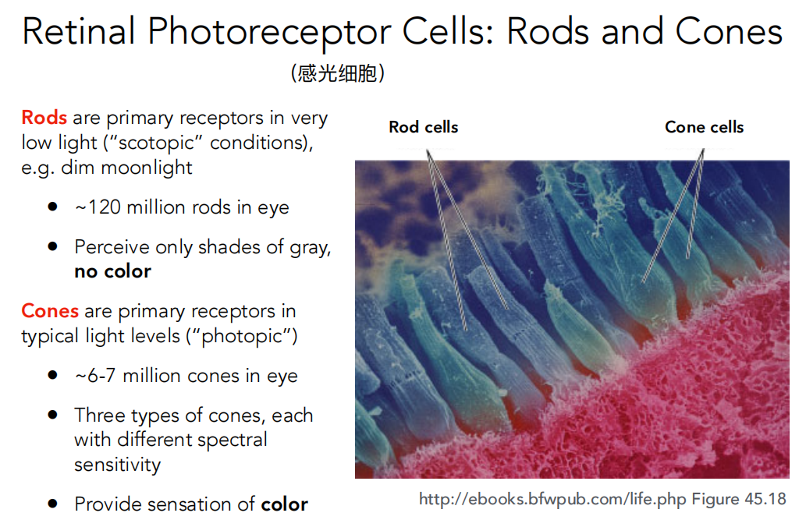
2.学习方面
1.好奇的本能
你本能对于任何未知的东西充满好奇,而对已经熟悉的东西提不起多少兴趣---好奇心和注意力
为什么呢?
因为一切的未知都有可能帮助你在接下来的生活当中提高自己适应的可能.
2.信息大爆发
利用对于未知的好奇,媒体时代大爆发,人们能够获得海量的知识,大量的未知涌现,利用你的好奇心获取流量,获得经济收益.但损害的正是你的注意力和好奇心,他们获得有价值东西的概率被极速拉低.过多的刺激逐渐让你不再好奇,注意力也无法集中.
3.典型的例子
3.1 新闻和头条

3.2 小说:
你来到一个未知的世界:你要如何生存?
如果你获得一个未知系统:你要怎么办?
如果你回到了过去:你如何利用已有的经验?
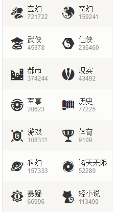
3.3 影视:
如果发生了XXX,你要怎么处理?
在某种情况下,别人怎么处理?
如果你是xxx职业,你要怎么处理?
可以发现:这就是学习,你是如此的热爱学习,你在努力的学习在XXX情况下,你要如何才能更好的维持自身的生存状态.
3.如何提高你的学习能力?
举一个游戏的例子:冒险岛
当你想要练一个小号(学一门技能)最快的方式是什么?
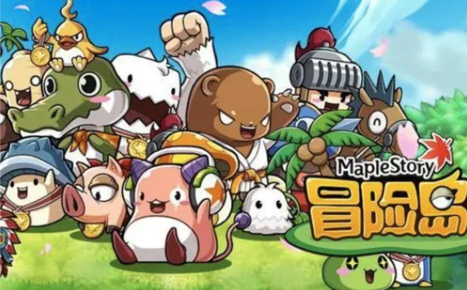
1.Link:
冒险岛当中如果你有其他角色达到指定等级,是能提供链接让小号更厉害的.
现实:如果你有其他相关技能,那么你学习另外一个技能的速度会快很多,所以往往面越广,你学的越快.
思考:更多方向的学习,能带给你更多的启发,帮助你学好当前想学的,这恰恰契合了人类的大脑神经网络的发展,越多的链接带来越稳固的信号传输,记忆越牢,发散思维越强.
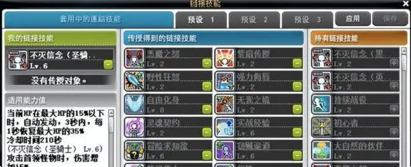
2.方法
提高刷怪速率(更多的学习,获取更多的经验)
经验值提高(提高单个学习的效率)
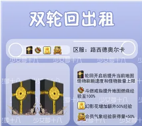
2.1 如何提怪刷怪效率?
以美术为例,最快让你线条画直的方式是什么?
2.1.1 这样练可以让你线条画直画稳嘛?
可以,但是效率很低,一个小时也就临摹两张
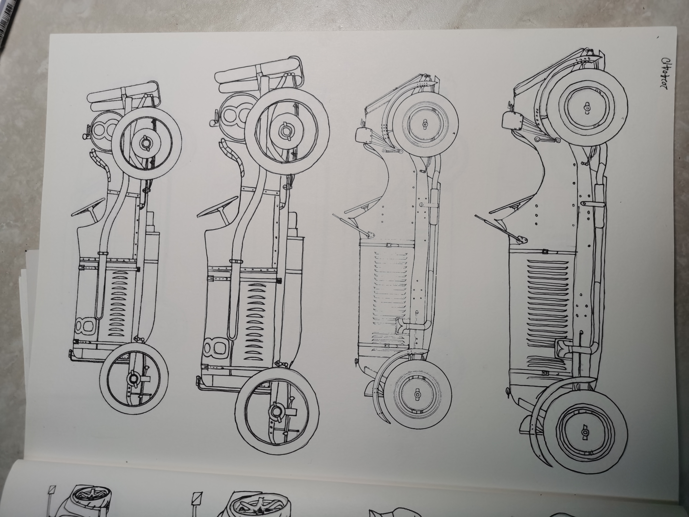
2.1.2 一直这样练可以画直嘛?
自然也是可以,但是并不是刻意的练习线条,而是透视,结构一起练,有问题吗?
没有问题,但是对于练画直线条来说,效率太低.
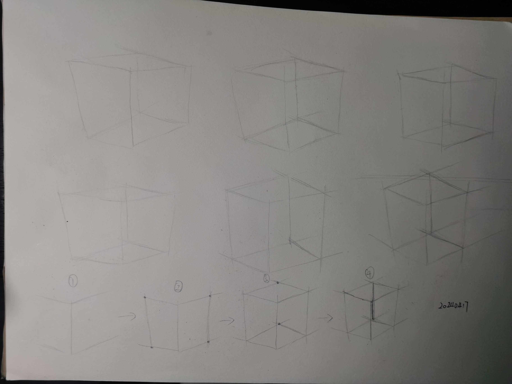
2.1.3 美术必修课:排线,极快的速度,刻意的练习指定的知识(也就是增加刷怪速度)
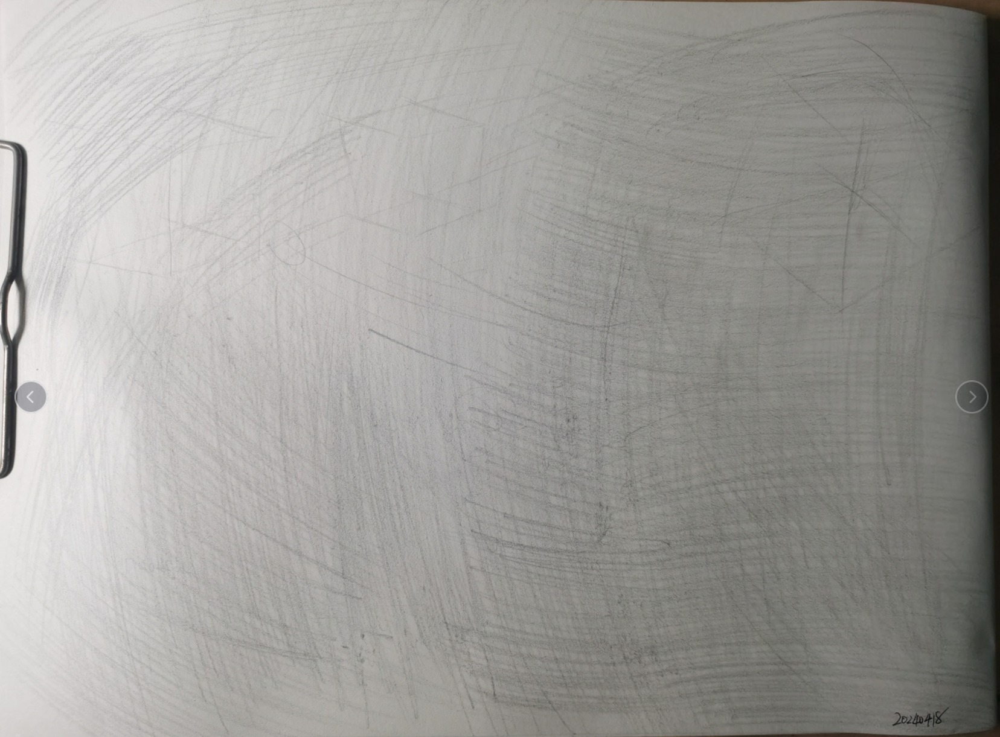
2.1.4 这种针对刻意练习,本质上是聚焦重点,以损失一定精度为代价,加大训练量(刷怪数量)来提高对于技能的习得速度.
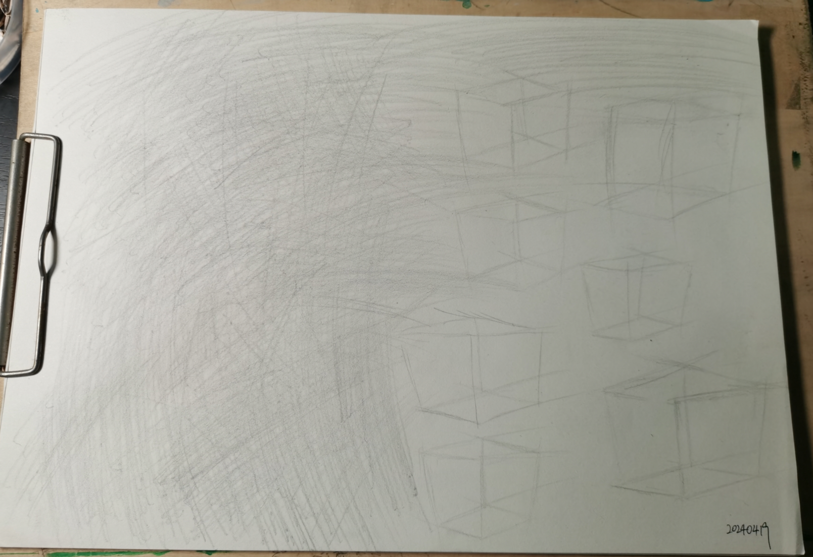
2.2 如何提高单个学习的效率?
2.1.1 提高学习留存率
以另外一个游戏为例:黑暗之魂
PS:这个角色叫做阳光骑士,有很多故事
2.1.2.1 直接打BOSS(学习技能)不存档会怎么样?
打不过又要重新跑,会很不顺利.
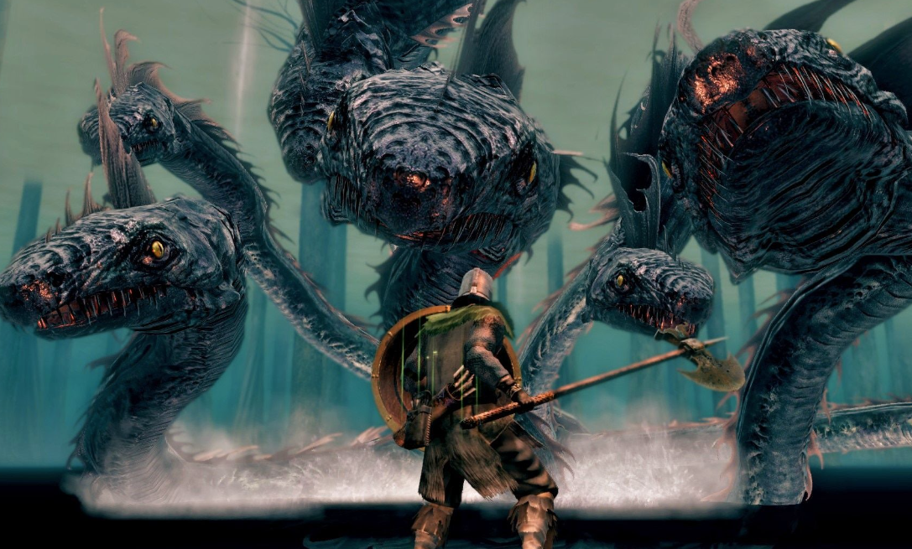
2.1.2.2 那么如果存档呢?
把前面已经学好的东西保存下来,然后以此为基础继续往下挑战BOSS,是不是会顺利很多?
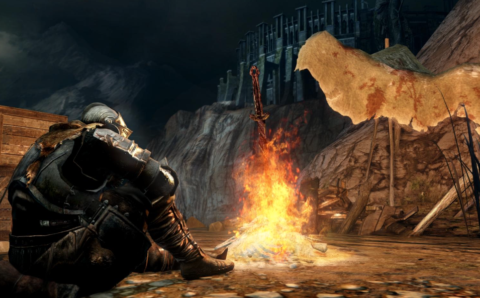
2.1.2.3 这就是你学习过程中的存档点.
所以,你需要不断的复习(存档),BOSS才好打
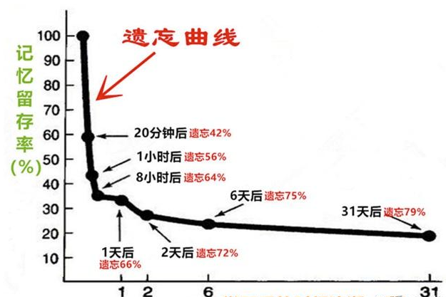
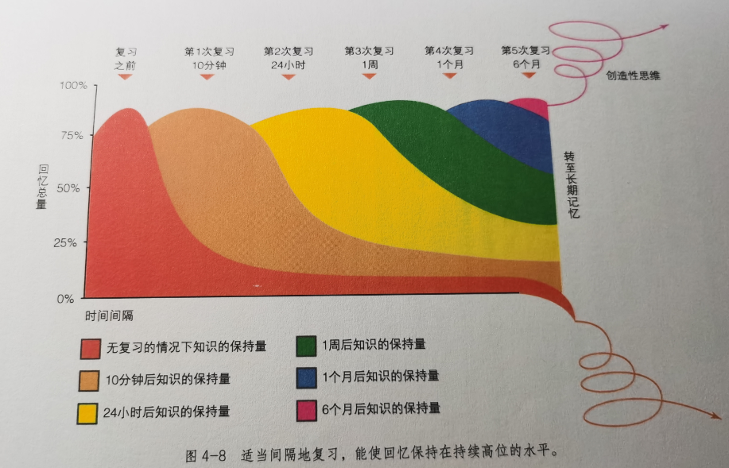
2.1.2 提高学习的速度
冒险岛中有Link装备(无级别装备),梦幻西游也有无级别装备,这些装备最大的用处是什么?练小号!
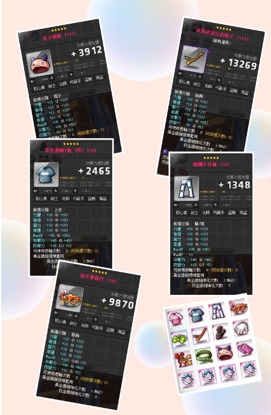
无论你在任何知识的学习当中,都能够使用的装备,提高你学习能力的装备.
2.1.2.1 大脑和肌肉一样,是要锻炼的,不锻炼就会萎缩,所以强壮的大脑本身能极大的提高学习能力
PS:推荐一个游戏:Switch的脑锻炼
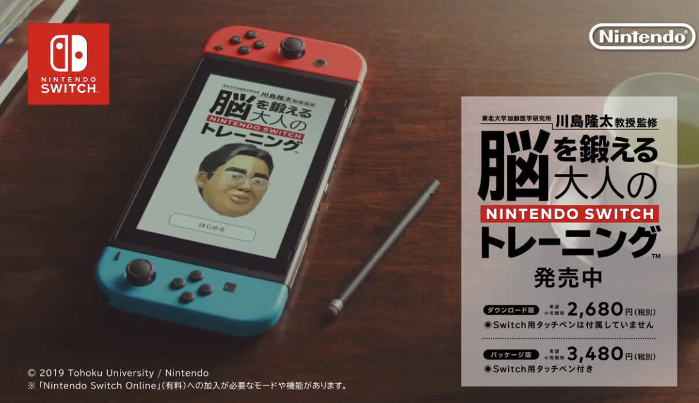
2.1.2.2 学习方法,优秀的学习方法能帮助你更好,更快的学习.
PS:推荐书籍:

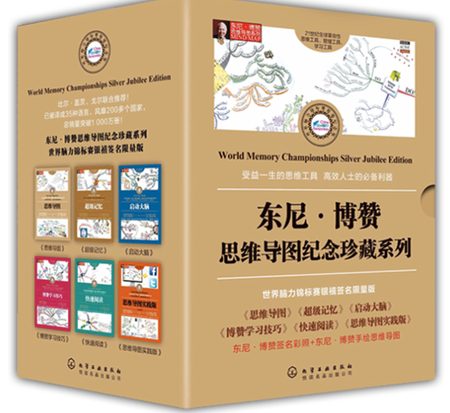
2.1.2.3 身体的状态,需要锻炼来维持,锻炼能够激活全身状态,自然能够提高学习能力
PS:推荐游戏:Swith健生环大冒险,有氧拳击
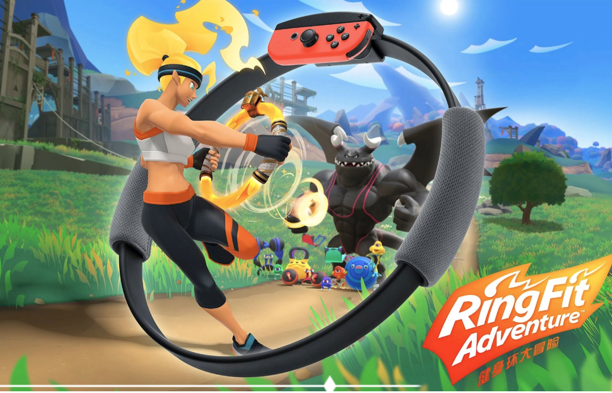
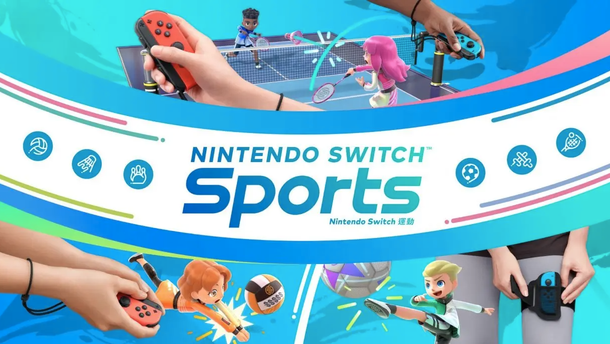
2.1.2.4 良好的作息和充足的营养,睡眠是大脑进行碎片整理,记忆留存,清理废物的关键阶段,没有充足的睡眠自然会导致事倍功半,精神不好,充足的营养是支撑大脑运算的基础(大脑虽然只占人体重量的2%-3%,但是消耗却占30%,典型的耗能大户--也是减肥的关键)